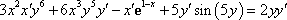
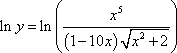
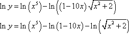
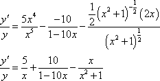
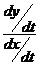

MATHS :: Lecture 09 :: Increasing & Decreasing ,Maxima & Minima Function

Chain Rule differentiation
If y is a function of u ie y = f(u) and u is a function of x ie u = g(x) then y is related to x through the intermediate function u ie y =f(g(x) )
\y is differentiable with respect to x
Furthermore, let y=f(g(x)) and u=g(x), then
 =
= 
There are a number of related results that also go under the name of "chain rules." For example, if y=f(u) u=g(v), and v=h(x),
then =
Problem
Differentiate the following with respect to x
- y = (3x2+4)3
- y =
Marginal Analysis
Let us assume that the total cost C is represented as a function total output q. (i.e) C= f(q).
Then marginal cost is denoted by MC=
The average cost =
Similarly if U = u(x) is the utility function of the commodity x then
the marginal utility MU =
The total revenue function TR is the product of quantity demanded Q and the price P per unit of that commodity then TR = Q.P = f(Q)
Then the marginal revenue denoted by MR is given by
The average revenue =
Problem
1. If the total cost function is C = Q3 - 3Q2 + 15Q. Find Marginal cost and average cost.
Solution
MC =
AC = 
2. The demand function for a commodity is P= (a - bQ). Find marginal revenue.
(the demand function is generally known as Average revenue function). Total revenue TR = P.Q = Q. (a - bQ) and marginal revenue MR=
Growth rate and relative growth rate
The growth of the plant is usually measured in terms of dry mater production and as denoted by W. Growth is a function of time t and is denoted by W=g(t) it is called a growth function. Here t is the independent variable and w is the dependent variable.
The derivative  is the growth rate (or) the absolute growth rate gr=. GR =
is the growth rate (or) the absolute growth rate gr=. GR = 
The relative growth rate i.e defined as the absolute growth rate divided by the total
dry matter production and is denoted by RGR.
i.e RGR = .  =
=
Problem
- If G = at2+b sin t +5 is the growth function function the growth rate and relative growth rate.
GR =
RGR = . 
Implicit Functions
If the variables x and y are related with each other such that f (x, y) = 0 then it is called Implicit function. A function is said to be explicit when one variable can be expressed completely in terms of the other variable.
For example, y = x3 + 2x2 + 3x + 1 is an Explicit function
xy2 + 2y +x = 0 is an implicit function
Problem
For example, the implicit equation xy=1 can be solved by differentiating implicitly gives
=
Implicit differentiation is especially useful when y’(x)is needed, but it is difficult or inconvenient to solve for y in terms of x.
Example: Differentiate the following function with respect to x 
Solution
So, just differentiate as normal and tack on an appropriate derivative at each step. Note as well that the first term will be a product rule.



Example: Find 


 for the following function.
for the following function.


Solution
In this example we really are going to need to do implicit differentiation of x and write y as y(x).


Notice that when we differentiated the y term we used the chain rule.
Example: Find 


 for the following.
for the following. 


Solutio:First differentiate both sides with respect to x and notice that the first time on left side will be a product rule.


Remember that very time we differentiate a y we also multiply that term by 

 since we are just using the chain rule. Now solve for the derivative.
since we are just using the chain rule. Now solve for the derivative.
The algebra in these can be quite messy so be careful with that.
Example:Find 


 for the following
for the following 


Here we’ve got two product rules to deal with this time.


Notice the derivative tacked onto the secant. We differentiated a y to get to that point and so we needed to tack a derivative on.
Now, solve for the derivative.


Logarithmic Differentiation
For some problems, first by taking logarithms and then differentiating,
it is easier to find  . Such process is called Logarithmic differentiation.
. Such process is called Logarithmic differentiation.
- If the function appears as a product of many simple functions then by
taking logarithm so that the product is converted into a sum. It is now
easier to differentiate them.
- If the variable x occurs in the exponent then by taking logarithm it is
reduced to a familiar form to differentiate.
ExampleBegin(); Example
Differentiate the function.
MPSetEqnAttrs('eq0001','',3,[[100,34,16,-1,-1],[133,45,21,-1,-1],[166,56,26,-1,-1],[],[],[],[415,139,67,-3,-3]]) MPEquation() 


MPSetEqnAttrs('eq0001','',3,[[100,34,16,-1,-1],[133,45,21,-1,-1],[166,56,26,-1,-1],[],[],[],[415,139,67,-3,-3]]); Solution
Differentiating this function could be done with a product rule and a quotient rule. We can simplify things somewhat by taking logarithms of both sides.
MPSetEqnAttrs('eq0002','',3,[[134,40,17,-1,-1],[177,53,22,-1,-1],[221,67,29,-1,-1],[],[],[],[554,165,70,-3,-3]]) MPEquation() 

MPSetEqnAttrs('eq0002','',3,[[134,40,17,-1,-1],[177,53,22,-1,-1],[221,67,29,-1,-1],[],[],[],[554,165,70,-3,-3]]); MPSetEqnAttrs('eq0003','',3,[[190,49,22,-1,-1],[253,67,30,-1,-1],[316,84,37,-1,-1],[],[],[],[792,215,95,-3,-3]]) MPEquation() 

MPSetEqnAttrs('eq0003','',3,[[190,49,22,-1,-1],[253,67,30,-1,-1],[316,84,37,-1,-1],[],[],[],[792,215,95,-3,-3]]); MPSetEqnAttrs('eq0004','',3,[[175,89,42,-1,-1],[233,118,55,-1,-1],[291,148,69,-1,-1],[],[],[],[729,368,173,-3,-3]]) MPEquation() 

ExampleBegin(); Example
Differentiate MPSetEqnAttrs('eq0007','',3,[[30,11,3,-1,-1],[39,15,3,-1,-1],[47,17,3,-1,-1],[],[],[],[119,44,9,-3,-3]]) MPEquation() 

MPSetEqnAttrs('eq0007','',3,[[30,11,3,-1,-1],[39,15,3,-1,-1],[47,17,3,-1,-1],[],[],[],[119,44,9,-3,-3]]); Solution
First take the logarithm of both sides as we did in the first example and use the logarithm properties to simplify things a little.
MPSetEqnAttrs('eq0009','',3,[[54,30,13,-1,-1],[73,39,16,-1,-1],[90,48,20,-1,-1],[],[],[],[227,120,52,-3,-3]]) MPEquation() 
MPSetEqnAttrs('eq0009','',3,[[54,30,13,-1,-1],[73,39,16,-1,-1],[90,48,20,-1,-1],[],[],[],[227,120,52,-3,-3]]); Differentiate both sides using implicit differentiation.
MPSetEqnAttrs('eq0010','',3,[[121,30,12,-1,-1],[162,39,16,-1,-1],[203,49,20,-1,-1],[],[],[],[507,124,50,-3,-3]]) MPEquation() 


MPSetEqnAttrs('eq0010','',3,[[121,30,12,-1,-1],[162,39,16,-1,-1],[203,49,20,-1,-1],[],[],[],[507,124,50,-3,-3]]); As with the first example multiply by y and substitute back in for y.
MPSetEqnAttrs('eq0011','',3,[[75,34,14,-1,-1],[99,45,19,-1,-1],[123,57,23,-1,-1],[],[],[],[310,145,61,-3,-3]]) MPEquation() 

PARAMETRIC FUNCTIONS
Sometimes variables x and y are expressed in terms of a third variable called parameter. We find  without eliminating the third variable.
without eliminating the third variable.
Let x = f(t) and y = g(t) then
 =
=
= = 
Problem
1. Find for the parametric function x =a cos , y = b sin
Solution
 =
=
=
=
Inference of the differentiation
Let y = f(x) be a given function then the first order derivative is  .
.
The geometrical meaning of the first order derivative is that it represents the slope of the curve y = f(x) at x.
The physical meaning of the first order derivative is that it represents the rate of change of y with respect to x.
PROBLEMS ON HIGHER ORDER DIFFERENTIATION
The rate of change of y with respect x is denoted by  and called as the first order derivative of function y with respect to x.
and called as the first order derivative of function y with respect to x.
The first order derivative of y with respect to x is again a function of x, which again be differentiated with respect to x and it is called second order derivative of y = f(x) and is denoted by  which is equal to
which is equal to
In the similar way higher order differentiation can be defined. Ie. The nth order derivative of y=f(x) can be obtained by differentiating n-1th derivative of y=f(x)
where n= 2,3,4,5….
Problem
Find the first , second and third derivative of
- y =
- y = log(a-bx)
- y = sin (ax+b)
Partial Differentiation
So far we considered the function of a single variable y = f(x) where x is the only independent variable. When the number of independent variable exceeds one then we call it as the function of several variables.
Example
z = f(x,y) is the function of two variables x and y , where x and y are independent variables.
U=f(x,y,z) is the function of three variables x,y and z , where x, y and z are independent variables.
In all these functions there will be only one dependent variable.
Consider a function z = f(x,y). The partial derivative of z with respect to x denoted by  and is obtained by differentiating z with respect to x keeping y as a constant. Similarly the partial derivative of z with respect to y denoted by
and is obtained by differentiating z with respect to x keeping y as a constant. Similarly the partial derivative of z with respect to y denoted by  and is obtained by differentiating z with respect to y keeping x as a constant.
and is obtained by differentiating z with respect to y keeping x as a constant.
Problem
1. Differentiate U = log (ax+by+cz) partially with respect to x, y & z
We can also find higher order partial derivatives for the function z = f(x,y) as follows
(i) The second order partial derivative of z with respect to x denoted as is obtained by partially differentiating with respect to x. this is also known as direct second order partial derivative of z with respect to x.
(ii)The second order partial derivative of z with respect to y denoted as is obtained by partially differentiating  with respect to y this is also known as direct second order partial derivative of z with respect to y
with respect to y this is also known as direct second order partial derivative of z with respect to y
(iii) The second order partial derivative of z with respect to x and then y denoted as is obtained by partially differentiating  with respect to y. this is also known as mixed second order partial derivative of z with respect to x and then y
with respect to y. this is also known as mixed second order partial derivative of z with respect to x and then y
iv) The second order partial derivative of z with respect to y and then x denoted as
is obtained by partially differentiating with respect to x. this is also known as mixed second order partial derivative of z with respect to y and then x. In similar way higher order partial derivatives can be found.
Problem
Find all possible first and second order partial derivatives of
1) z = sin(ax +by)
2) u = xy + yz + zx
Homogeneous Function
A function in which each term has the same degree is called a homogeneous function.
Example
- x2 –2xy + y2 = 0 ® homogeneous function of degree 2.
- 3x +4y = 0 ® homogeneous function of degree 1.
- x3+3x2y + xy2 – y3= 0 ® homogeneous function of degree 3.
To find the degree of a homogeneous function we proceed as follows.
Consider the function f(x,y) replace x by tx and y by ty if f (tx, ty) = tn f(x, y) then n gives the degree of the homogeneous function. This result can be extended to any number of variables.
Problem
Find the degree of the homogeneous function
- f(x, y) = x2 –2xy + y2
- f(x,y) =
Euler’s theorem on homogeneous function
If U= f(x,y,z) is a homogeneous function of degree n in the variables x, y & z then 
Problem
Verify Euler’s theorem for the following function
1. u(x,y) = x2 –2xy + y2
2. u(x,y) = x3 + y3+ z3–3xyz
Increasing and decreasing function
Increasing function
A function y= f(x) is said to be an increasing function if f(x1) < f(x2) for all x1 < x2.
The condition for the function to be increasing is that its first order derivative is always
greater than zero .
i.e  >0
>0
Decreasing function
A function y= f(x) is said to be a decreasing function if f(x1) > f(x2) for all x1 < x2.
The condition for the function to be decreasing is that its first order derivative is always
less than zero .
i.e  < 0
< 0
Problems
1. Show that the function y = x3 + x is increasing for all x.
2. Find for what values of x is the function y = 8 + 2x – x2 is increasing or decreasing ?
Maxima and Minima Function of a single variable
A function y = f(x) is said to have maximum at x = a if f(a) > f(x) in the neighborhood of the point x = a and f(a) is the maximum value of f(x) . The point x = a is also known as local maximum point.
A function y = f(x) is said to have minimum at x = a if f(a) < f(x) in the neighborhood of the point x = a and f(a) is the minimum value of f(x) . The point x = a is also known as local minimum point.
The points at which the function attains maximum or minimum are called the turning points or stationary points
A function y=f(x) can have more than one maximum or minimum point .
Maximum of all the maximum points is called Global maximum and minimum of all the minimum points is called Global minimum.
A point at which neither maximum nor minimum is called Saddle point.
[Consider a function y = f(x). If the function increases upto a particular point x = a and then decreases it is said to have a maximum at x = a. If the function decreases upto a point x = b and then increases it is said to have a minimum at a point x=b.]
The necessary and the sufficient condition for the function y=f(x) to have a maximum or minimum can be tabulated as follows
|
Maximum |
Minimum |
First order or necessary condition |
|
|
Second order or sufficient condition |
|
> 0 |
Working Procedure
1. Find and 
2. Equate  =0 and solve for x. this will give the turning points of the function.
=0 and solve for x. this will give the turning points of the function.
3. Consider a turning point x = a then substitute this value of x in  and find the
and find the
nature of the second derivative. If < 0, then the function has a maximum
value at the point x = a. If  > 0, then the function has a minimum value at
> 0, then the function has a minimum value at
the point x = a.
4. Then substitute x = a in the function y = f(x) that will give the maximum or minimum
value of the function at x = a.
Problem
Find the maximum and minimum values of the following function
y = x3 – 3x +1
| Download this lecture as PDF here |